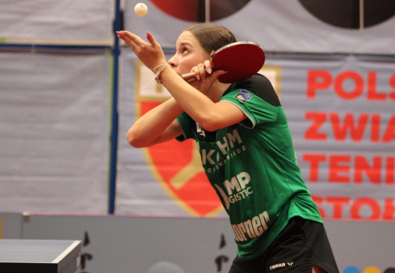
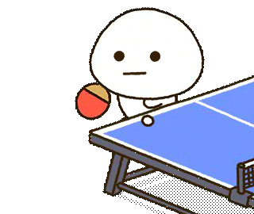

Style serwów


W tenisie sto³owym istnieje kilka popularnych rodzajów serwisów, które s¹ kluczowe dla taktyki gry. Oto kilka z nich:
Serwis Tomahawk: Jest to serwis, w którym rakietka wykonuje ruch przypominaj¹cy zamach m³ota (st¹d nazwa „tomahawk”). U¿ywa siê go g³ównie do serwowania z rotacj¹ boczn¹ lub topspinow¹, a charakterystyczny ruch rêk¹ sprawia, ¿e pi³ka ma zmienny tor lotu, co sprawia k³opoty przy odbiorze.
Serwis Pendulum: To jeden z najbardziej popularnych serwisów, w którym rakietka wykonuje ruch huœtawki (pendulum) – pi³ka jest serwowana z rotacj¹ boczn¹ lub topspinow¹. Serwis ten jest bardzo efektywny, poniewa¿ zmienia kierunek lotu pi³ki, co utrudnia jej odbiór.
Serwis z rotacj¹ backspinow¹: Choæ jest to bardziej ogólna kategoria, taki serwis, zwany te¿ „serwisem wstecznym”, mo¿e byæ wykonywany w ró¿nych wariantach, np. w stylu pendulum. Pi³ka opada szybko i zmusza przeciwnika do uderzenia w sposób defensywny. Jest czêsto u¿ywany do wprowadzenia przeciwnika w sytuacjê, w której bêdzie zmuszony do d³ugiego odbicia.
Serwis flick: Jest to szybki serwis, w którym rakietka wykonuje szybki „flick” (pstrykniêcie) nad sto³em, zazwyczaj z rotacj¹ boczn¹ lub topspinow¹. Serwis ten jest u¿ywany, by zaskoczyæ przeciwnika szybkoœci¹ i zmiennoœci¹ rotacji.
Serwis z rotacj¹ boczn¹: Ten serwis wykorzystuje rotacjê boczn¹, która sprawia, ¿e pi³ka „skrêca” w lewo lub w prawo. Jest to trudne do przewidzenia, poniewa¿ zmienia siê tor lotu pi³ki, co zmusza odbijaj¹cego do bardziej precyzyjnego ustawienia.
Ka¿dy z tych serwisów ma swoje zastosowanie w zale¿noœci od stylu gry i sytuacji na stole. Gracze czêsto mieszaj¹ ró¿ne rodzaje serwisów, aby zaskoczyæ przeciwnika i zdobyæ przewagê ju¿ na pocz¹tku wymiany.